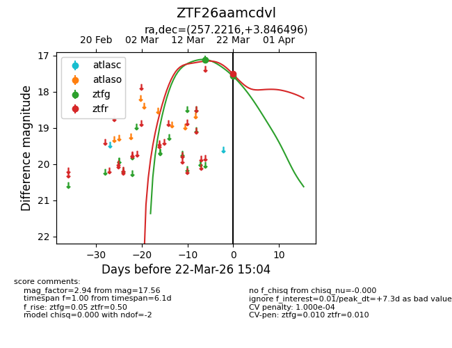
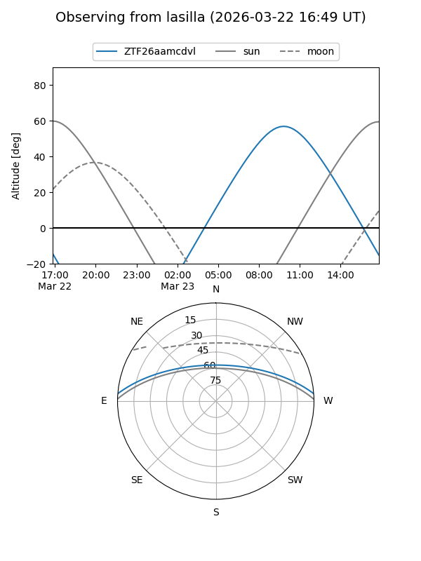
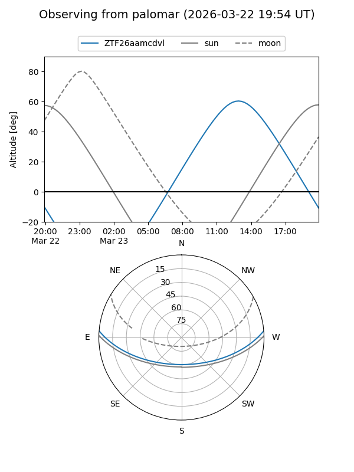
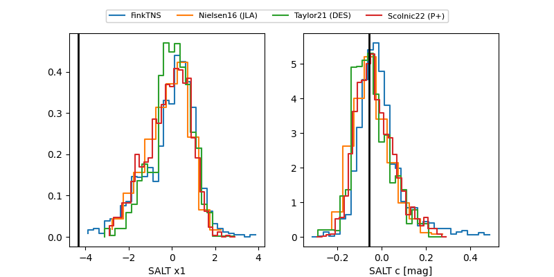

ZTF26aamcdvl
Target ZTF26aamcdvl at 2026-03-22 15:06
Aliases and brokers:
FINK: link
Lasair: link
ALeRCE: link
alt names
ZTF26aamcdvl (ztf,fink_ztf)
Coordinates:
equatorial (ra, dec) = 257.2216,+3.84650
equatorial (HMS+DMS) = 17:08:53.18,+03:50:47.39
galactic (l, b) = (24.2629,+24.50694)
Flags:
likely cv
Photometry:
last ztfg=17.56, ztfr=17.50
2 ztfg, 1 ztfr detections
Lightcurve

Visibility


Additional plots
